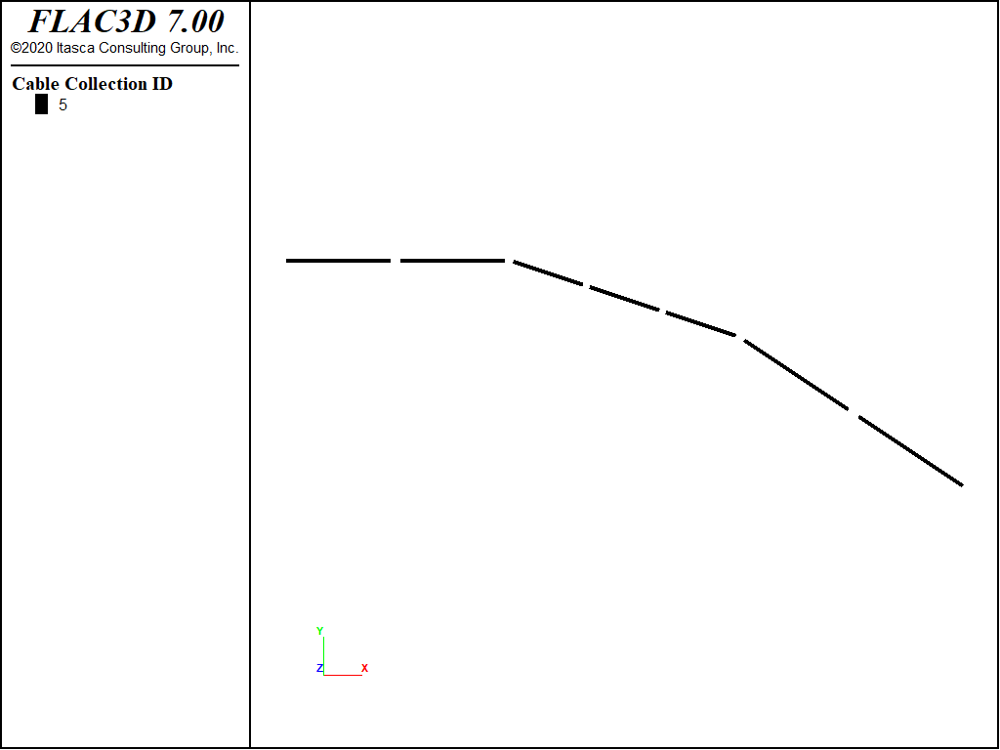
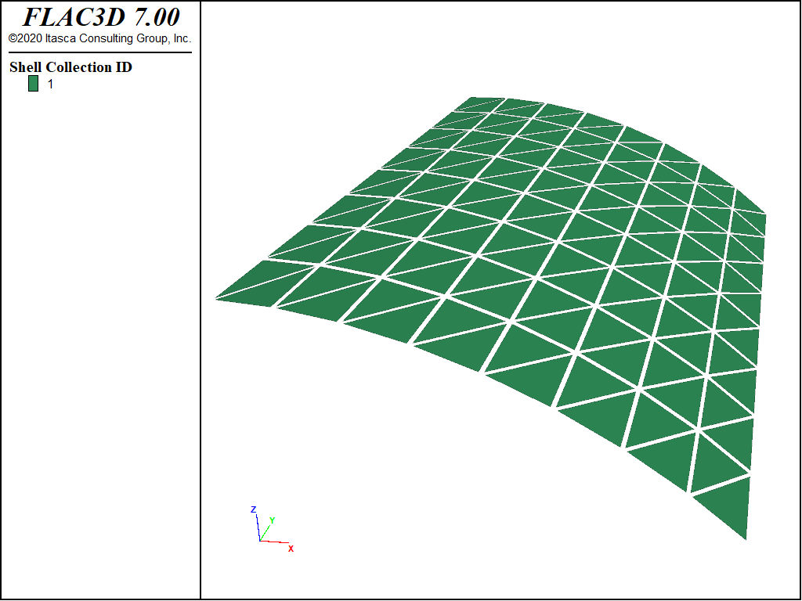
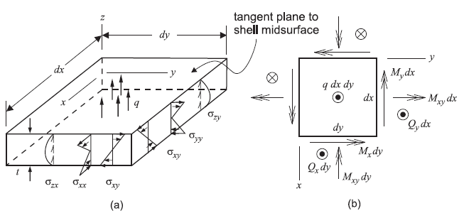
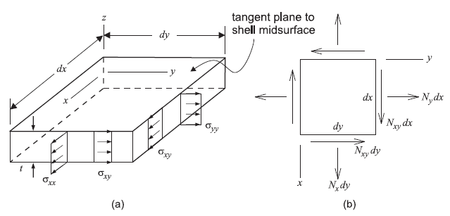

结构单元
岩土分析与设计中的一个重要方面是利用结构支护稳定岩体或土体。可模拟任意几何与性质的结构及其与岩土体的相互作用。本节描述程序中可用的各类支护构件（梁、锚索、桩、壳、土工格栅与衬砌），即 结构单元，以及支撑结构单元逻辑的数值表述。
结构单元可与代表固体连续体的网格相互独立或耦合。结构单元逻辑采用与程序其余部分相同的显式拉格朗日求解流程（而非隐式矩阵求逆流程）：求解完整的动力运动方程，即便模拟的过程本质上是静态的。通过指定大应变求解模式可计入大位移（含几何非线性）；也可用动力分析选项获得体系在时域内的完整动力响应。
本页给出结构单元的长篇导论，其内容组织如下。
- 首先简要描述程序中提供的六类支护构件。
- 随后在 术语（Terminology） 中给出描述相关术语的高层介绍。
- 结构单元的创建与相互连接方式接下来讨论（见 几何创建（Geometry Creation） 与 连接结构单元（Joining Structural Elements））。讨论内容包括：如何把由一组梁结构单元与节点构成的特定物理实体（例如物理梁）作为单一单元来引用——以便绘图以及指定性质与边界条件。还描述了以下一般流程：
- 边界条件与初始条件的指定（见 指定边界条件与初始条件（Specifying Boundary and Initial Conditions）），
- 壳中的应力（见 壳中的应力（Stresses in Shells）），
- 坐标系与符号约定（见 局部系与符号约定（Local Systems and Sign Conventions）），
- 阻尼条件（见 指定阻尼与时步条件（Specifying Damping and Timestep Conditions）），
- 热膨胀（见 结构单元中的热膨胀（Thermal Expansion in Structural Elements）），以及
- 材料性质（见 材料性质（Material Properties））。
在描述程序中各类结构单元之前，先讨论可在结构节点上规定的各种条件是有益的。这在本页之后的 结构单元节点（Structural Element Nodes） 一节中讨论。该节还包括与节点相关命令的汇总。
在节点一节之后的各节中，分别详细描述各类结构单元：梁（Beam）、锚索（Cable）、桩（Pile）、壳（Shell）、土工格栅（Geogrid） 与 衬砌结构单元（Liner Structural Elements）。这包括力学行为、所需性质与相关命令的描述。随后给出简单示例说明该结构单元类型的应用。最后提供该结构单元类型所用命令与 FISH 的参考文档。
结构单元逻辑一般表述的详细讨论见 结构单元逻辑的一般表述（General Formulation of Structural-Element Logic）。希望实现结构单元与网格之间更复杂相互作用的用户应参阅该节，以理解实现流程。
本节中矩阵与向量用粗体表示。数学符号 \([\quad ]\)、\(\lceil\quad\rfloor\)、\(\{\quad\}\) 与 \(\lfloor\quad\rfloor\) 分别表示矩形矩阵、对角矩阵、列向量与行向量。此外，结构矩阵与单元矩阵分别用大小写英文字母表示。例如 \([\bf K]\) 与 \([\bf k]\) 分别表示结构刚度矩阵与单元刚度矩阵。
结构单元的类型
可指定六种支护构件形式。这些构件可相互连接和/或与网格连接。
梁结构单元（Beam Structural Elements） —— 梁结构单元是两节点直线有限单元，每节点六个自由度：三个平动分量与三个转动分量。物理梁（即由各向同性材料构成、截面双对称的任意弯曲梁结构）可建模为梁单元的集合。各单元表现为线弹性材料且无破坏限值；不过可在单元之间引入极限塑性弯矩甚至塑性铰（该处转动可出现不连续）。梁单元可与网格刚性连接，使网格变形时梁内产生力与弯矩；它们可承受点荷载或分布荷载。梁单元用于模拟具有抗弯能力与有限弯矩的结构支护构件，包括明挖基坑中的支撑杆件以及承受点荷载或分布荷载的一般框架结构。
锚索结构单元（Cable Structural Elements） —— 锚索结构单元是两节点直线有限单元，每节点有一个轴向平动自由度。物理锚索（即由各向同性材料构成的任意弯曲锚索结构）可建模为锚索单元的集合。各单元可拉压屈服，但不能承受弯矩。锚索与网格之间发生剪切向（平行于锚索轴线）的摩擦作用。锚索可锚固于网格中某特定点，也可注浆使其沿长度因锚索与网格之间的相对运动而产生力。锚索还可承受点荷载或预张拉。锚索单元用于模拟各类抗拉能力重要的支护构件，包括锚索锚杆与拉杆。
桩结构单元（Pile Structural Elements） —— 桩结构单元是两节点直线有限单元，每节点六个自由度。物理桩可建模为桩单元的集合。桩单元的刚度矩阵与梁单元相同；但除提供梁的结构行为外，桩与网格之间还发生法向（垂直于桩轴）与剪切向（平行于桩轴）的摩擦作用。就此而言桩兼具梁与锚索的特点。除侧壁摩擦效应外还可模拟端承效应（见 轴向受载桩（Axially Loaded Pile））。桩可承受点荷载或分布荷载。桩单元用于模拟与岩土体之间同时存在法向与剪切向摩擦作用的支护构件，如基础桩。
还有一种特殊材料模型作为桩单元的扩展，用于模拟锚杆支护的性状。该模型可计入支护周围围压的变化、结构单元与网格之间材料的应变软化行为以及单元的拉伸断裂。
壳结构单元（Shell Structural Elements） —— 壳结构单元是三节点平面有限单元。可用五种有限单元类型（2 个膜单元、1 个板弯曲单元与 2 个壳单元）。物理壳（即由各向同性或正交各向异性材料构成的任意弯曲壳结构）可建模为由壳单元集合构成的棱面曲面。壳的结构响应由有限单元类型控制（仅承受膜荷载、仅承受弯曲荷载，或同时承受膜与弯曲荷载）。各壳单元表现为各向同性或正交各向异性的线弹性材料且无破坏限值；不过可沿单元之间的边缘引入塑性铰线（该处转动可出现不连续），所用双节点流程与梁相同。壳单元可与网格刚性连接，使网格变形时壳内产生应力；它们可承受点荷载或面压力。壳单元用于模拟任何横向剪切变形引起的位移可忽略的薄壳结构所提供的结构支护。
土工格栅结构单元（Geogrid Structural Elements） —— 土工格栅结构单元是三节点平面有限单元，被赋予承受膜荷载但不承受弯曲荷载的有限单元类型。物理膜可建模为土工格栅单元的集合。土工格栅单元表现为各向同性或正交各向异性的线弹性材料且无破坏限值。土工格栅与模型网格之间发生剪切向（土工格栅表面切平面内）的摩擦作用，且土工格栅在法向从属于网格运动。土工格栅可锚固于模型网格中某特定点，也可附着使其表面因土工格栅与模型网格之间的相对运动而产生应力。可把土工格栅视为一维锚索的二维类比。土工格栅单元用于模拟与土体剪切作用重要的柔性膜，如土工布与土工格栅。
衬砌结构单元（Liner Structural Elements） —— 衬砌结构单元是三节点平面有限单元，可赋予壳单元可用的五种有限单元类型中的任一种。物理衬砌可建模为附着于模型网格表面的衬砌单元集合。除提供壳的结构行为外，衬砌与模型网格之间还发生剪切向（衬砌表面切平面内）的摩擦作用。此外在法向上既可承受压力也可承受拉力，且衬砌可能从网格脱开（随后又重新接触）。衬砌单元用于模拟同时存在法向压/拉作用与剪切向摩擦作用的薄衬砌，如喷混凝土衬砌隧洞或挡土墙。
衬砌单元提供可与衬砌两侧模型网格相互作用的选项。
Terminology
加入结构单元逻辑后，程序可模拟由固体连续体与承载构件框架组成的力学体系的结构响应。固体连续体由多面体形状的 网格单元 集合表示，各网格单元与一组 网格点 关联。框架由 结构单元 集合表示，各结构单元与一组 节点 关联。框架通过把节点连到网格单元（而非仅连到网格点）或其他节点的 连接 与固体连续体相互作用。
每个节点关联六个自由度，由三个平动分量与三个转动分量组成。每个节点还有各自的局部正交坐标系。节点局部系给出求解节点运动方程的方向，也定义节点可通过连接附着于目标实体的方向。连接支持以下三种附着条件，它们对其源节点的每个局部方向独立指定：自由、刚性与可变形。结构单元连接的详细描述见 结构单元连接（Structural-Element Links）。
多数建模情形下无需指定连接性质；只要创建、定位并赋予所需结构单元性质即可。节点（以及必要时的连接）会自动创建，并从使用它们的结构单元继承必要信息。
几何创建
六类结构单元提供建模六类物理对象所需的构件（组件）：梁、锚索、桩、壳、土工格栅与衬砌。每个物理对象直接关联于同类型的组件对象集合。例如一根锚索关联于锚索单元集合，而一个衬砌关联于衬砌单元集合。物理对象与其相应组件对象之间的关联，通过为每个结构单元存储两个不同的标识号来实现：
id—— ID 号指物理对象。component-id—— component-ID 号指组件对象本身。
可为各类物理对象指定性质，这些性质将自动被关联的组件对象继承。例如命令
struct cable property grout-friction=30.0 range id=3
将把 30 度的浆体摩擦角赋给 ID 号为 3 的锚索中的所有锚索单元，而命令
struct cable property grout-friction=30.0 range component-id=3
将把 30 度的浆体摩擦角赋给 component-ID 号为 3 的单个锚索单元。
Beam、Cable、Pile、Shell、Geogrid 与 Liner 绘图项可用于查看六种不同单元类型，以及节点与连接。
梁、锚索与桩结构单元
梁、锚索与桩的几何由其相应组件对象集合定义。这三种类型的创建命令完全相同；为简单起见以下示例用 cable 单元，但它们同样适用于 pile 或 beam 单元。
可用 structure cable create 命令按以下三种方式之一创建构成直线的单根锚索（由若干单个单元构成）：
- 通过指定两个端点位置（沿线创建锚索单元命令（
structure cable create by-line））， - 通过指定每端两个节点的 ID 号（按节点 ID 创建锚索单元命令（
structure cable create by-nodeids）），或 - 通过指定起点、方向与长度（按射线创建锚索单元命令（
structure cable create by-ray））。
每条 create 命令接受可选 ID 参数，表示所创建对象的 ID。若未提供 ID，则使用下一个可用 ID。沿直线在等间距的内部点处自动创建新节点。若某个端点位置已存在节点，且该节点被 ID 与命令中所给相同的单元使用，则不在该位置新建节点；否则新建节点。
可用 structure cable import 命令由外部几何信息创建一组锚索。对导入数据中的每条线段将创建一个或多个锚索单元。目前数据可按三种方式之一导入：
- 由现有几何集合（结构锚索单元导入从几何（
structure cable import from-geometry））。创建几何集合的细节见 几何（Geometry）。 - 由兼容的 CAD 文件（结构锚索单元导入从文件（
structure cable import from-file））。当前兼容的文件类型为 DXF、STL 与 Itasca 几何格式。 - 由挤出器集合（结构锚索单元导入从挤出器（
structure cable import from-extruder））。二维挤出器的用法见 挤出（Extrude）。
下例（示于 图 1（Figure 1））说明节点与结构单元之间的关联机制。图中未绘出节点，而是把锚索单元按真实长度的 90% 绘制。考虑一根 id 为 5 的曲线锚索，由 7 个单元与 8 个节点构成。每个单元都存储锚索 id 为 5 以及自身的 component-id。把鼠标移到单元上并查看信息窗口即可看到这一点。如此，7 个单元组合成一根可仅用 id 为 5 来引用的复杂任意曲线锚索。


图 1：ID 为 5 的单根曲线锚索的表示
生成 图 1（Figure 1） 所示模型所需的命令列于 selexample1-1.dat 数据文件（selexample1-1.dat）。
selexample1-1.dat：创建一根 ID 为 5 的单根曲线锚索
model new
struct cable create by-line (0.0,4.0,0.0) (3.0,4.0,0.0) segments=2 id=5
struct cable create by-line (3.0,4.0,0.0) (6.0,3.0,0.0) segments=3 id=5
struct cable create by-line (6.0,3.0,0.0) (9.0,1.0,0.0) segments=2 id=5
并不要求端点位置位于模型网格内；事实上完全可以没有网格。（回想结构单元可与代表固体连续体的网格相互独立或耦合。）使用 structure cable create 命令时，若新建单元所用某些节点位于网格单元内，这些节点将连接到这些网格单元，连接性质将按 梁（Beam）、锚索（Cable） 与 桩结构单元（Pile Structural Elements） 中所述的相应单元行为设置。
在两个端点位置之间指定多段的常见原因是提高精度，尤其是与宿主介质相互作用的桩与锚索。此时各桩或锚索上剪力分布在一定程度上取决于节点数量。以下经验规则常用于确定建模锚索时应采用的节点数：
- 尽量在每个网格单元内布置约一个节点。理由是网格单元是应力常量的区域，因此一个网格单元内无需多于一个相互作用点。
- 尽量在锚索的锚固长度内布置两到三个锚索单元。锚索锚固长度由所给屈服强度 \(F_t\) 除以浆体黏聚强度 \(c_g\) 确定。按此做法，条件具备时可发生“拔出”破坏。若锚索单元过长，则只可能发生各单元的屈服破坏模式。（若用桩单元模拟锚杆行为，该理由同样适用。）
壳、土工格栅与衬砌结构单元
壳、土工格栅与衬砌的几何由其相应组件对象集合定义。这三种类型的创建命令完全相同；为简单起见以下示例用 shell 单元，但它们同样适用于 geogrid 或 liner 单元。
可用 structure shell create 命令按以下四种方式之一创建单个壳面（由若干单个单元构成）：
- 通过指定一组表面网格单元面（将在其上创建单元）（
structure shell create by-face）。 - 通过指定构成四边形的四个已有结构节点（按节点 ID 创建壳单元命令（
structure shell create by-nodeids））。 - 通过指定空间中构成四边形的四个点（按四边形创建壳单元命令（
structure shell create by-quadrilateral））。 - 通过指定空间中构成三角形的三个点（结构壳单元创建按三角形（
structure shell create by-triangle））。
壳面也可用 structure shell import 命令由外部几何信息创建。对导入数据中的每条线段将创建一个或多个壳单元。目前数据可按两种方式之一导入：
- 由现有几何集合（结构壳单元导入从几何（
structure shell import from-geometry））。创建几何集合的细节见 几何（Geometry）。 - 由兼容的 CAD 文件（结构壳单元导入从文件（
structure shell import from-file））。当前兼容的文件类型为 DXF、STL 与 Itasca 几何格式。
程序中创建壳类单元最常见的方式是用 structure shell create by-face 命令把它们置于网格单元面上。下例用几何逻辑创建45 度圆弧面的壳单元。所用命令列于 selexample1-2.dat 数据文件（selexample1-2.dat）。
先用 按圆弧创建几何边命令（geometry edge create by-arc） 命令创建一段 45 度圆弧，分为 8 段。随后用 几何生成从边（geometry generate from-edges） 命令把这些边沿 y 方向挤出为 8 段。该描述随后由 结构壳单元导入从几何（structure shell import from-geometry） 命令使用，为几何描述中的每个四边形创建两个三角形壳单元。图 2（Figure 2） 示出所得壳单元。
model new
geometry select 'cyl'
geometry edge create by-arc origin (0,0,0) start (0,0,1)...
end (0.707,0,0.707) segments 8
geometry generate from-edges extrude (0,1,0) segments 8
struct shell import from-geometry 'cyl'


图 2：通过几何描述生成壳单元所创建的曲面壳的表示
把结构单元相互连接并连接到网格
结构单元之间可通过共享节点，或通过把其中一个节点连到另一节点或某网格单元来相互连接（见 术语（Terminology））。若两个或多个结构单元共享一个节点，则所有力与力矩都在该节点处传递。若需限制或消除单元之间传递的特定力和/或力矩，则可创建两个独立节点并用节点-节点连接相连，再设置适当的附着条件。例如若需以球铰连接两根梁，可在两个梁端节点之间添加节点-节点连接，并把所有平动方向与转动方向的附着条件分别设为 rigid 与 free。把单元连接到网格时也可用同样流程，只是此时必须在节点与其所在网格单元之间建立节点-网格单元连接。节点-节点与节点-网格单元连接由 结构链接（structure link） 命令控制，连接条件见 结构单元连接（Structural-Element Links）。
单元创建命令（structure cable create、structure beam create 等）设计为在建模的不同物理对象之间保持清晰分离。例如若要模拟首尾相接的两根独立桩，请发出两条独立的 structure pile create 命令并指定两个不同 ID（例如 1 与 2）。这将创建位于同一几何位置的两个节点：一个供桩 1 使用，一个供桩 2 使用。相邻桩单元之间不会传递力与力矩；只在公共位置处把力传递给周围网格单元。这模拟了首尾相接的两根独立桩。若希望是一根桩，则同样发出两条独立的 structure pile create 命令，但这次为两者指定相同 ID。这将创建一个由公共位置两侧的桩单元共享的节点，相邻单元之间会传递力与力矩。多数建模情形下不应修改单元创建命令所设置的默认连接附着条件，因为这些附着条件为各特定单元类型产生所需的单元-网格相互作用。
指定边界条件与初始条件
所有边界条件与初始条件（除作用于梁与桩表面的分布荷载、作用于壳、衬砌与土工格栅表面的压力荷载，以及作用于锚索的预张力外）都用 结构节点（structure node） 命令指定。节点条件包括
- 速度固定条件，
- 当前速度分量，以及
- 所施加的点荷载（力和/或力矩）。
每个节点关联两个坐标系：全局系与节点局部系。节点局部系用于指定控制节点与网格如何相互作用的附着条件。此外，运动方程在这些局部方向上求解。因此只能在这些方向上 fix 或 free 速度。节点局部系的方位在一组循环开始时依据使用该节点的单元类型自动设定。（这两个体系的完整说明见 结构节点（structure node） 命令。）
节点处的速度与转角在节点局部系中用 structure node fix 与 structure node free 命令固定与释放。速度与转角在全局系中用 structure node initialize 命令初始化为指定值。点荷载在全局系或节点局部系中用 structure node apply 命令施加于节点。
分布荷载用 施加锚索单元条件（structure cable apply）（例如）施加于单元。线性单元（beam、cable 或 pile）可在单元局部 y 与 z 方向施加分布荷载。平面单元（shell、geogrid 或 liner）可施加垂直于单元表面的压力。注意在大应变模式下，所施加荷载保持与相应单元体系方向一致，而该方向可能随单元位置变化而转动。
用 施加锚索单元拉力命令（structure cable apply tension） 命令对锚索施加预拉力。正的预拉力使锚索受拉。更多信息见 施加预拉力（Pretensioning）。
壳中的应力
本节简要介绍壳的行为。本节许多内容取自 Cook 等（1989）。更完整的讨论请参阅该文献。
壳在空间中构成曲面。通常壳相对其跨度较薄。几何上，壳由其厚度 \(t\) 与壳中面形状描述。若中面为平面，则称该壳为板。一般壳同时呈现弯曲应力与膜应力。壳中的弯曲应力对应板中的弯曲应力，产生弯矩、扭矩与横向剪力。膜应力对应平面应力问题中的应力：沿中面切向作用，产生中面切向力。这些单位长度上的力矩与力称为应力合力。应力合力共八个，可分为弯曲作用产生的与膜作用产生的两类。以下两节将分别描述。
弯曲作用
可用板弯曲理论计入壳的弯曲作用，该理论如下把梁理论从一维推广到二维。定义表面坐标系 \(xyz\)，使 \(x\) 与 \(y\) 为中面内的正交坐标，\(z\) 为垂直于中面的方向。把壳中面的切平面近似为承受“板弯曲”的平板，即外荷载无平行于 \(xy\) 平面的分量，且中面 \(z=0\) 上 \(\sigma_{xx}\) = \(\sigma_{yy}\) = \(\sigma_{xy}\) = 0。这种平板如同直梁，通过弯曲作用承受横向荷载。图 3（Figure 3） 示出承受板弯曲荷载、材料均质且线弹性的板横截面上的应力。法向应力 \(\sigma_{xx}\) 与 \(\sigma_{yy}\) 随 \(z\) 线性变化，并关联弯矩 \(M_x\) 与 \(M_y\)。剪应力 \(\sigma_{xy}\) 也随 \(z\) 线性变化，并关联扭矩 \(M_{xy}\)。法向应力 \(\sigma_{zz}\) 相对 \(\sigma_{xx}\)、\(\sigma_{yy}\) 与 \(\sigma_{xy}\) 可忽略。横向剪应力 \(\sigma_{yz}\) 与 \(\sigma_{xz}\) 随 \(z\) 按二次变化。侧向荷载 \(q\) 包括面荷载与体力，均沿 \(z\) 方向。


图 3：壳中的弯曲作用：(a) 作用于承受板弯曲荷载、均质线弹性板微元上的应力；(b) 与这些应力对应的应力合力。（应力合力按正方向绘出。）
图 3（Figure 3） 中的应力产生弯曲应力合力
以及横向剪应力合力
弯曲合力为单位长度上的力矩，横向剪切合力为单位长度上的力。微分总力矩与总力为 \(M_x\)\(dy\)、\(Q_x\)\(dy\) 等，如 图 3（Figure 3） 所示。以下应力分布符合板弯曲理论的假定，并满足 (1) 与 (2)：
应力 \(\sigma_{xx}\)、\(\sigma_{yy}\) 与 \(\sigma_{xy}\) 在表面 \(z = \pm t/2\) 处最大，而横向剪应力 \(\sigma_{xz}\) 与 \(\sigma_{yz}\) 在中面处最大。应注意两点：
- 一般应力状态下板单元的平衡微分方程表明，\(\sigma_{zz}\) 沿板厚按三次抛物线变化（Ugural 1981）。但按板弯曲理论的假定，该应力相对其他应力分量可忽略——在高度集中的横向荷载附近，该假定变得不可靠。
- 按板弯曲理论的假定，\(\sigma_{xz}\) 与 \(\sigma_{yz}\) 相对其他应力分量可忽略；但把这些应力沿厚度积分后，它们产生与其他面荷载和力矩同量级的横向剪应力合力 \(Q_x\) 与 \(Q_y\)。
膜作用
可用平面应力条件计入壳的膜作用。定义表面坐标系 \(xyz\)，使 \(x\) 与 \(y\) 为中面内的正交坐标，\(z\) 为垂直于中面的方向。把壳中面的切平面近似为承受平面应力条件的平板，即板在其自身平面内受载。这种平板通过膜作用承受这些荷载。图 4（Figure 4） 示出承受平面应力荷载、材料均质且线弹性的板横截面上的应力。法向与剪应力 \(\sigma_{xx}\)、\(\sigma_{yy}\) 与 \(\sigma_{xy}\) 沿厚度为常数。


图 4：壳中的膜作用：(a) 作用于承受平面应力荷载、均质线弹性板微元上的应力；(b) 与这些应力对应的应力合力。（应力合力按正方向绘出。）
图 4（Figure 4） 中的应力产生膜应力合力
膜合力为单位长度上的力。微分总力为 \(N_x\)\(dy\)、\(N_y\)\(dx\) 等，如 图 4（Figure 4） 所示。以下应力分布符合平面应力假定，并满足 (4)：
一般壳应力
壳结构同时呈现弯曲应力与膜应力。一般壳中的应力与应力合力由这两种受载模式的叠加构成（见 弯曲作用（Bending Action） 与 膜作用（Membrane Action））。可用表面坐标系 \(xyz\) 表示这些应力量，其中 \(x\) 与 \(y\) 为壳中面内的正交坐标，\(z\) 为垂直于中面的方向。八个应力合力可分为弯曲（\(M_x\)、\(M_y\) 与 \(M_{xy}\)）、横向剪切（\(Q_x\) 与 \(Q_y\)）与膜（\(N_x\)、\(N_y\) 与 \(N_{xy}\)）应力合力（见 (1)、(2) 与 (4)）。应力沿壳厚度的分布取决于用于模拟结构行为的特定板或壳理论。对 Kirchhoff（薄壳）与 Reissner（厚壳）理论，应力分布都对应 (3) 与 (5) 的叠加：
应力与应力合力示于 图 3（Figure 3） 与 图 4（Figure 4），其中也给出应力合力的符号约定。
应力恢复流程
程序中一般壳应力按下述方式计算。应力恢复流程的更详细描述见 应力恢复流程（Stress Recovery Procedure）。各壳类结构单元（壳、土工格栅与衬砌）都有定义其结构响应的有限单元刚度矩阵（见 有限单元刚度矩阵（Finite Element Stiffness Matrices））。各壳类单元存储一个内含作用于该单元广义节点力的内力向量。每个时步中，内力向量通过把单元刚度矩阵乘以增量节点位移（节点速度乘以时步）来更新。注意壳应力并非每个时步都计算。壳应力只通过调用应力恢复流程计算：先用内力向量与刚度矩阵算出应力合力，再用 (6) 计算应力。这些应力合力与作用于单元的广义节点力平衡。
壳类单元的结构性质包括材料性质（例如各向同性材料的 \(E\) 与 \(\nu\)）与厚度。这些性质体现在单元刚度矩阵中。若在模拟过程中修改某结构性质，则：(1) 广义节点力与应力合力保持不变；(2) 只有厚度改变时应力才变化（见 (6)，注意即便应力合力不变，厚度改变也会影响应力）。
注意该流程适用于所有壳类结构单元：shell、geogrid 与 liner。下面命令与 FISH 示例使用 shell，但可替换为任何壳类关键字。
应力恢复流程要求在恢复任何应力量之前建立一致的表面坐标系。表面坐标系 \(xyz\) 使 \(x\) 与 \(y\) 为壳中面内的正交坐标，\(z\) 为中面法向。应力合力以该系表示。表面坐标系存储于每个节点，可用 恢复壳单元表面命令（structure shell recover surface） 命令与 FISH 函数 结构节点表面坐标系（struct.node.system.surface） 设置。可用 结构节点列表系统表面（structure node list system-surface） 命令打印，并用 Shell、Geogrid 与 Liner 绘图项绘制。
在一组壳类单元上建立表面坐标系后，可用 恢复壳单元合力命令（structure shell recover resultants） 与 恢复壳单元应力命令（structure shell recover stress） 命令为这些单元恢复应力合力与应力。这些取值可被查询、采样为历史记录，并显示为彩色等值线：
- 这些取值可用 结构壳单元列表合力（
structure shell list resultant）、结构壳单元列表应力（structure shell list stress） 与 列出壳单元主应力命令（structure shell list stress-principal） 命令以及 FISH 函数 壳单元节点应力合力（struct.shell.resultant）、壳单元节点应力（struct.shell.stress） 与 壳单元主应力（struct.shell.stress.prin） 查询。 - 这些取值可用
structure shell history命令采样为历史记录。 - 这些取值可用 Shell、Geogrid 或 Liner 绘图项绘制为彩色等值线。注意默认情况下绘图项会计算最新的合力与应力值，但可在绘图项属性中设为显示当前计算引擎值。
任何一步计算之后，或表面坐标系被改变之后，应力合力与应力即失效；此外若深度因子改变，应力也失效。这些情况下必须重新恢复取值。
应力恢复流程包括两个步骤：(1) 建立一致的表面坐标系；(2) 恢复应力量。这两个步骤都可限制为只施加于一定范围的壳类单元。这使用户可以控制共用同一节点的壳类单元之间是否进行节点平均。例如设想要在带封头的圆柱压力容器中恢复应力。封头边缘的曲率不连续，跨该边缘的部分应力也不连续。可对封头与筒壁中的壳类单元分别执行两次恢复操作，从而分别恢复这两处的应力。这样做时，沿边缘各节点表面坐标系的 \(z\) 方向在两种情形下会不同。
局部系与符号约定
每个单元都有自己的局部坐标系。对梁与桩，该系用于指定截面惯性矩与所施加的均布荷载。对壳、土工格栅与衬砌，该系用于指定正交各向异性材料性质与所施加的压力荷载。
各节点都有各自的节点局部坐标系。该系用于指定控制节点与网格如何相互作用的附着条件，也定义求解运动方程的方向。节点局部系的方位在一组循环开始时依据使用该节点的单元类型自动设定（见 结构节点（structure node） 命令）。
对节点以及各类单元都计算响应。节点响应包括力与力矩，以及平动与转动速度与位移。力与平动速度在节点处沿正坐标轴（全局或节点局部）方向为正。正力矩与转动速度遵循“右手定则”：拇指指向正坐标轴方向，四指沿正转动方向弯曲。图 3（Figure 3） 中的双箭头表示右手拇指的方向，用以定义正力矩与正转动。
各类单元的响应及相应符号约定，见各单元类型对应的“响应量”一节（见本章后文）。梁与桩中力与力矩分布的符号约定见 梁符号约定（Beam Sign Conventions） 与 桩符号约定（Pile Sign Conventions），壳、土工格栅与衬砌中应力合力的符号约定见 弯曲作用（Bending Action） 与 膜作用（Membrane Action），其中 \(xyz\) 轴对应应力恢复所用的表面坐标系（见 应力恢复流程（Stress Recovery Proceture））。
指定阻尼与时步条件
静态与动力分析中施加于模型网格的相同阻尼条件也可施加于结构单元。注意用 单元力学阻尼（zone mechanical damping） 与 单元动力阻尼（zone dynamic damping） 命令指定的阻尼条件只适用于网格单元，必须用 structure damping 命令为结构单元指定阻尼条件。
可用 structure damping 命令改变阻尼条件，用 structure node damping-local 命令改变节点处局部阻尼或组合阻尼的阻尼常数。静态或动力分析所用时步可用 structure safety-factor 命令调整。此外，动力分析中转动自由度质量的计算可用 structure scale-rotational-mass 命令控制。
结构单元中的热膨胀
程序中结构单元表述实现了线性热膨胀效应。温度变化由模型网格单元中的热传导或温度重新初始化（对 配置热力计算模式（model configure thermal））产生。
不考虑结构单元中的热传导效应。假定网格单元温度瞬时传递到结构单元。温度变化在结构单元轴向产生热膨胀/收缩。忽略单元横向膨胀效应，且不发生其他耦合。
单元中热膨胀产生的增量轴力按下式计算（注意对轴力而言压缩为正）
其中 \(E\) 为单元杨氏模量，\(A\) 为横截面积，\(\alpha\) 为线性热膨胀系数，\(\Delta T\) 为单元温度增量。
结构单元节点温度增量由宿主网格单元中节点温度增量的插值确定，并存储于结构节点偏移量中。对一维结构单元（即梁、锚索或桩），温度变化取两节点值的平均。一维单元的热应变增量按热线性膨胀系数、该步温度变化与单元长度的乘积计算。对二维结构单元（即壳、土工格栅或衬砌），温度变化取三节点值的平均。二维单元的热应变增量按热线性膨胀系数、该步温度变化与从单元形心到各节点向量长度的乘积计算。（共有三个这样的向量。）结构节点处的热应变、热应变增量与温度均不存储。
注意当对锚索指定较大温度增量时，建议给锚索赋予非零抗压屈服强度，以免在热膨胀阶段发生压缩屈服。
材料属性
用 structure shell property 命令（或对 beam、cable、pile、geogrid 或 liner 单元的相应命令）为结构单元赋予性质。范围逻辑可用于把性质设置限定为指定范围内的单元。各类结构单元的性质在以下各节中详述。注意所有量必须以一致的单位制给出（见 表 1（Table 1））。
| 属性 | 单位 | SI | 英制 | ||||
|---|---|---|---|---|---|---|---|
| 面积 | 长度2 | m2 | m2 | m2 | cm2 | ft2 | in2 |
| 轴向或剪切刚度 | 力/位移 | N/m | kN/m | MN/m | Mdynes/cm | lbf/ft | lbf/in |
| 外露周长 | 长度 | m | m | m | 厘米 | 英尺 | in |
| 惯性矩 | 长度4 | m4 | m4 | m4 | cm4 | ft4 | in4 |
| 塑性弯矩 | 力-长度 | N-m | kN-m | MN-m | Mdynes-cm | ft-lbf | in-lbf |
| 屈服强度 | 力 | N | kN | MN | Mdynes | lbf | lbf |
| 杨氏模量 | 应力 | Pa | kPa | MPa | bar | lbf/ft2 | psi |
其中，1 bar = 106 dynes/cm2 = 105 N/m2 = 105 Pa。
类型专用信息
以下各节详述各类结构单元。
- 结构单元节点（Structural Element Nodes）
- 结构单元连接（Structural Element Links）
- 梁结构单元（Beam Structural Elements）
- 锚索结构单元（Cable Structural Elements）
- 桩结构单元（Pile Structural Elements）
- 壳型结构单元（Shell-Type Structural Elements）
- 壳结构单元（Shell Structural Elements）
- 土工格栅结构单元（Geogrid Structural Elements）
- 衬砌结构单元（Liner Structural Elements）
- 结构单元逻辑的一般表述（General Formulation of Structural-Element Logic）
- 参考文献（References）
structure Commands & FISH (all)
| 这些内容对您有帮助吗？… | FLAC3D © 2019, Itasca | 原文更新于 2020 年 10 月 8 日 |